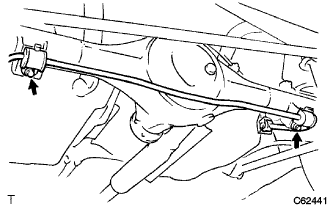

Rear Sutabirizer bar SUB-ASSY (4WD) Installation |
| 1. Rear stabilizerbush installation |
| 2. Rearstabirizer bar SUB-ASSY mounting |
| 3. Rearstabirizer barbracket No.2 Installation |
|  |
With two bolts, attach two stabilizer bar brackets.
| 4. Rearstabilizer link SUB-ASSY installation |
Attach the stabilizer link LH with two bolts.
 |
Attach the stabilizer link RH with two bolts.